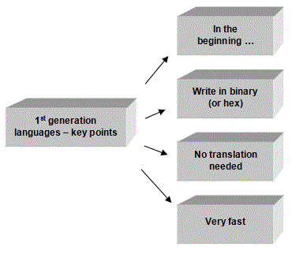
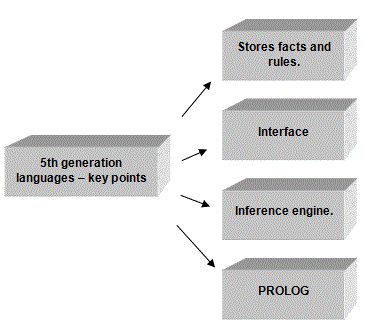

<div id="jsn-maincontent" class="span9 order1  row-fluid">
					<div id="jsn-maincontent_inner">
						<div id="jsn-centercol"><div id="jsn-centercol_inner">
									<div id="jsn-mainbody-content" class=" jsn-hasmainbody">
								<div id="jsn-mainbody-content-inner1"><div id="jsn-mainbody-content-inner2"><div id="jsn-mainbody-content-inner3"><div id="jsn-mainbody-content-inner4" class="row-fluid">
								
										
								
								<div id="jsn-mainbody-content-inner" class="span12 order1 ">
		
										<div id="jsn-mainbody">
										<div id="system-message-container">
	</div>

										<div class="item-page" itemscope itemtype="https://schema.org/Article">
	<meta itemprop="inLanguage" content="en-GB" >
	
		
						
		
	
	
		
								<div itemprop="articleBody">
		<p></p>
<h1 style="text-align: center;">Programming paradigms and the development of programming languages</h1>
<p class="NormalContent"><strong class="NormalContentHeading">A history of the development of programming languages</strong><br> Before you begin, note that the strange word 'paradigms' simply means 'methods'. 'Programming paradigms' are the 'programming methods' available to you. (NOTE: Paradigm is pronounced para-dime.) The paradigms discussed here are OOP, procedural and declarative languages. To understand how these languages have come about, you'll need to do some background reading. You should use your textbooks and search the Internet for different points of view.</p>
 
<p class="NormalContent">In this section, we are going to classifying languages according to their historical and functional development. Then we will classify languages according to their paradigm-type: OOP, Procedural and Declarative.</p>
<p align="center"><br>&nbsp;</p>
<p class="NormalContentHeading"><strong>First generation languages</strong></p>
<p align="center"><br>&nbsp;</p>
<p class="NormalContent">Computers are digital devices. They use patterns of binary numbers (ones and zeros). This is known as 'machine code'. Originally, you would write programs by writing patterns of ones and zeros! You can imagine how boring that was; it was difficult to write, easy to make errors, difficult to debug and took ages! Slightly (only just) better than this was to write programs using hex codes rather then binary! Hex codes were simply groups of bits. Instead of typing in 0111 1111, you could type in 7F. Great! These programming languages, while having many drawbacks, didn't need translation because they were written in the language of the processor - machine code. They have applications in areas such as control, where fast processing is needed. Binary and Hex programming languages are known as ‘first generation languages’. Programs written in these languages run very quickly compared to programs written in high-level languages.</p>
<div>
<p class="QuestionStyle"><strong style="line-height: 1.5;">Second generation languages</strong></p>
</div>
<p align="center"></p>
<p class="NormalContent">It was recognised that writing in binary or hex was far from ideal. Languages were written to get over some of the problems of first generation languages. They were much closer to English but further from machine code. These 'second generation' languages were known as assembly languages or low-level languages. They contained shortened English instructions called 'mnemonics. Examples of instructions include ADD, SUB, NOP, LDA, STA and so on. When a program was written, however, you couldn't just run it as before, because it wasn't in machine code, the language that the processor used. You had to convert (or 'translate') it first back to machine code and then you could run it. The type of program that translated assembly code into machine code was called an ‘assembler’. Second generation languages are used for real-time applications and where the programmer needs to manipulate the hardware inside a computer.</p>
<p class="NormalContent"><strong>Third generation languages</strong></p>
<p class="NormalContent" align="center"><br>&nbsp;</p>
<p class="NormalContent">Second generation languages were an improvement on what existed previously, but were still far from ideal. They were not particularly user-friendly and excluded people who had little training from using them. There was also a need to make programming focus more on specific applications, with an instruction set that helped get specific tasks done easily (such as file processing, for example). A whole range of third generation languages (also known as <strong>high-level languages</strong>) were written to do this; BASIC and PASCAL for teaching, COBOL for data processing, FORTRAN for scientists and so on. These languages require the user to specify all the steps needed to solve a problem. Think of your own experience of writing in a third generation language. Keywords are closely related to English. Your ‘Integrated Development Environment’ (IDE) enabled code to be developed easily, debugged and finally translated into machine code (now known as 'object code') quickly and effectively.</p>
<p class="NormalContent"><strong>Fourth generation languages (4GL)</strong></p>
<p class="NormalContent" align="center"><br>&nbsp;</p>
<p class="NormalContent">As computers became more powerful, software emerged that reduced the time it took to produce programs for users. Report Program Generator is an example of this type of program. This language is used to increase the speed of report production. It takes the actual format of the data and combines it with instructions on how to format a report. It then produces the report. Later on, you will learn about CASE tools. These are used to help an analyst analysis and design new systems. 4GL have been used to turn CASE designs into actual software or parts of the final product.</p>
<p class="NormalContent"><strong>Fifth generation languages</strong></p>
<p align="center"><br>&nbsp;</p>
<p class="NormalContent">Expert systems are considered 5th generation programs. They could be written in PROLOG, for example, which is considered a 5th generation programming language. You write applications by giving your computer a set of facts and then telling the computer how those facts relate to each other. You can then query the program by asking questions. It will search for facts based upon the rules you have declared and the search you are doing. What you don't do with an expert system is to tell it how to solve the problem (by writing a program that tells it what to do step-by-step, as in procedural languages such as COBOL or Pascal). You simply tell expert systems facts and rules and then ask it a question!</p>
<p class="NormalContent">For an expert system to work, you need:</p>
<ul>
<li style="list-style-type: none;">
<ul style="list-style-type: disc;">
<li class="NormalContent">An interface to let you enter facts and rules.</li>
<li class="NormalContent">A method of storing facts and rules.</li>
<li class="NormalContent">An interface to allow you to update facts and rules periodically.</li>
<li class="NormalContent">An interface to allow you to ask questions.</li>
<li class="NormalContent">An 'inference engine' - software that can actually perform queries.</li>
</ul>
</li>
</ul>
<p></p>	</div>

	
							</div>

									</div>
				
							</div>
							
				        							
							
							</div></div></div></div></div>			
							
							
		        				</div></div> 
				</div></div>